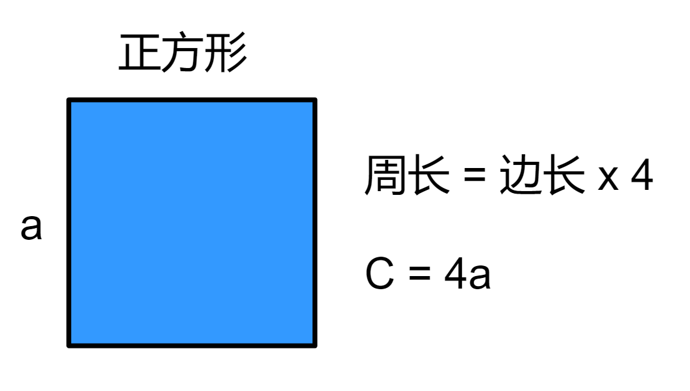
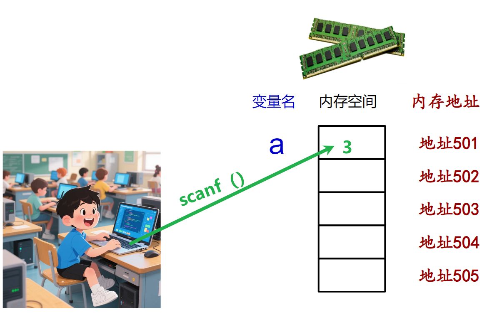

<!DOCTYPE lake>
<h1 data-lake-id="YdPEd" id="YdPEd"><span data-lake-id="u486e215a" id="u486e215a">0&gt; 功能需求</span></h1><p data-lake-id="u02bb57b9" id="u02bb57b9"><span class="lake-fontsize-12" data-lake-id="uff6385b2" id="uff6385b2" style="color: #000000"> 用户从键盘输入正方形的边长，求正方形的周长</span></p><p data-lake-id="ua851a1a6" id="ua851a1a6"></p><hr/><h1 data-lake-id="FCm8R" id="FCm8R"><span data-lake-id="uf2830782" id="uf2830782">1&gt; 需求分析</span></h1><p data-lake-id="udebd28d8" id="udebd28d8"><span data-lake-id="u6b6d8949" id="u6b6d8949">✅</span><span data-lake-id="ue413a31e" id="ue413a31e">输入：用户从键盘输入正方形的边长；</span></p><p data-lake-id="u96593f67" id="u96593f67"><span data-lake-id="u73900233" id="u73900233">✅</span><span data-lake-id="u2eee32e1" id="u2eee32e1">处理：计算周长（公式：周长 = 4 x 边长）</span></p><p data-lake-id="u08dc072c" id="u08dc072c"><span data-lake-id="u274d62f2" id="u274d62f2">✅</span><span data-lake-id="u06ce178b" id="u06ce178b">输出：打印计算结构</span></p><hr/><h1 data-lake-id="IUcih" id="IUcih"><span data-lake-id="uaa4e2730" id="uaa4e2730">2&gt; 程序设计</span></h1><span class="yuque-card-unsupported">[codeblock]</span><hr/><h1 data-lake-id="pwzcg" id="pwzcg"><span data-lake-id="ufbc05f4f" id="ufbc05f4f">3&gt; scanf()语法说明</span></h1><span class="yuque-card-unsupported">[codeblock]</span><p data-lake-id="u57f52202" id="u57f52202"><span data-lake-id="u30db5a6c" id="u30db5a6c">✅</span><span data-lake-id="u0e95c537" id="u0e95c537">函数功能：从标准输入设备（键盘）输入数据，并存入指定变量中；</span></p><p data-lake-id="u3923d7c5" id="u3923d7c5"><span data-lake-id="u7b5b6ef1" id="u7b5b6ef1">✅</span><span data-lake-id="u7dd67812" id="u7dd67812">&amp;a：存储变量的地址,  </span><strong><span data-lake-id="uffb1ad05" id="uffb1ad05" style="color: #DF2A3F">取地址符</span></strong><span data-lake-id="u20cbc756" id="u20cbc756">"&amp;"</span></p><p data-lake-id="uef34c93a" id="uef34c93a"></p><span class="yuque-card-unsupported">[codeblock]</span><p data-lake-id="u1f1cb22a" id="u1f1cb22a"><br/></p><p data-lake-id="u01305918" id="u01305918"></p><hr/><h1 data-lake-id="OJ2fm" id="OJ2fm"><span data-lake-id="u259ce054" id="u259ce054">🐻</span><span data-lake-id="u81ba8d3f" id="u81ba8d3f">实践练习：</span></h1><p data-lake-id="ua570426b" id="ua570426b"><span data-lake-id="u86a7b3f3" id="u86a7b3f3">习题1&gt; </span><span data-lake-id="ufdd04ccf" id="ufdd04ccf" style="color: #000000">计算矩形面积（长 * 宽）</span></p><p data-lake-id="u38623013" id="u38623013"><span data-lake-id="uc3b05483" id="uc3b05483" style="color: #000000">要求：从键盘输入矩形的长和宽，计算并输出面积。</span></p><span class="yuque-card-unsupported">[codeblock]</span><p data-lake-id="u842d52b0" id="u842d52b0"><span data-lake-id="ue5b66d01" id="ue5b66d01">​</span><br/></p><p data-lake-id="u047ecde6" id="u047ecde6"><span data-lake-id="u518a3b08" id="u518a3b08">习题2&gt; 实现2个数的交换：</span></p><p data-lake-id="u264ae3ea" id="u264ae3ea"><span data-lake-id="u4b052374" id="u4b052374">要求：从键盘输入2个整数，交换它们的值并输出结果。</span></p><span class="yuque-card-unsupported">[codeblock]</span><p data-lake-id="ue30c50a8" id="ue30c50a8"></p><p data-lake-id="uc75b34a6" id="uc75b34a6"><br/></p>